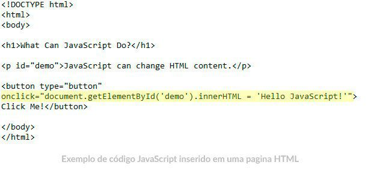

O que é javaScript?
JavaScript é uma linguagem de programação interpretada estruturada, de script em alto nível com tipagem dinâmica fraca e multiparadigma. Juntamente com HTML e CSS, o JavaScript é uma das três principais tecnologias da World Wide Web.
Informações sobre o javaScript
JavaScript é uma linguagem de programação criada em 1995 por Brendan Eich enquanto trabalhava na Netscape Communications Corporation. Originalmente projetada para rodar no Netscape Navigator, ela tinha o propósito de oferecer aos desenvolvedores formas de tornar determinados processos de páginas web mais dinâmicos, tornando seu uso mais agradável. Um ano depois de seu lançamento, a Microsoft portou a linguagem para seu navegador, o que ajudou a consolidar a linguagem e torná-la uma das tecnologias mais importantes e utilizadas na internet.
Embora ela tenha esse nome, não se deve confundir JavaScript com Java, linguagem de programação desenvolvida pela Sun Microsystems: antes, a linguagem criada pela Netscape recebera nomes como LiveScript e Mocha, mas, para aproveitar o grande sucesso da linguagem da Sun no mercado, os executivos da Netscape resolveram mudar o nome de sua linguagem para o atual. Entretanto, Java e Java Script são completamente diferentes e possuem propósitos diversos.
Objeto, noções básicas
Um objeto é uma coleção de dados e/ou funcionalidades relacionadas (que geralmente consistem em diversas variáveis e funções — que são chamadas de propriedades e métodos quando estão dentro de objetos). Vamos trabalhar com um exemplo para entender como eles são.
Para começar, faça uma cópia do nosso arquivo oojs.html. Isto contém muito pouco — um elemento < script> para escrevermos nosso código-fonte. Vamos usar isto como base para explorar a sintaxe básica do objeto. Ao trabalhar com este exemplo, você deve ter seu console de ferramentas de desenvolvedor JavaScript aberto e pronto para digitar alguns comandos.
Como acontece com muitas coisas em JavaScript, a criação de um objeto geralmente começa com a definição e a inicialização de uma variável. Tente digitar o código a seguir no arquivo que você baixou, salve e atualize:var pessoa = {};
Copy to Clipboard Se você inserir pessoa no seu console JS e pressionar o botão, deverá obter o seguinte resultado:[object Object]
Copy to Clipboard Parabéns, você acabou de criar seu primeiro objeto. Tarefa concluída! Mas este é um objeto vazio, então não podemos fazer muita coisa com isso. Vamos atualizar nosso objeto para ficar assim:var pessoa = {
nome: ['Bob', 'Smith'], idade: 32, sexo: 'masculino', interesses: ['música', 'esquiar'], bio: function() {
alert(this.nome[0] + ' ' + this.nome[1] + ' tem ' + this.idade + ' anos de idade. Ele gosta de ' + this.interesses[0] + ' e ' + this.interesses[1] + '.'); },
saudacao: function() { alert('Oi! Eu sou ' + this.nome[0] + '.'); } }; Copy to Clipboard
Depois de salvar e atualizar, tente inserir alguns dos itens a seguir no console JavaScript no devtools do seu navegador:pessoa.nome
pessoa.nome[0]
pessoa.idade
pessoa.interesses[1]
pessoa.bio()
pessoa.saudacao()
Copy to Clipboard
Agora você tem alguns dados e funcionalidades dentro de seu objeto e é capaz de acessá-los com uma sintaxe simples e agradável!